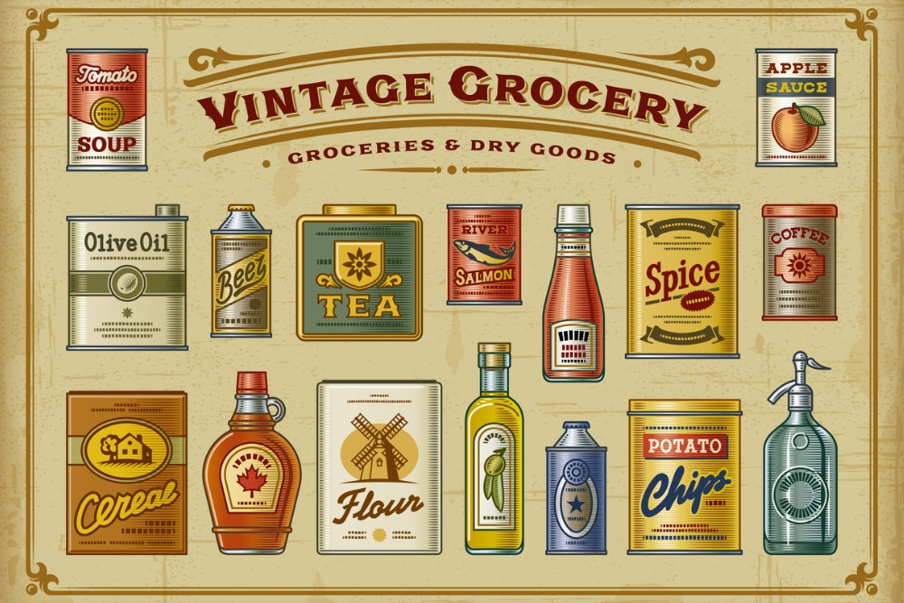

WHO AND WHEN
The History of E-Commerce
In 1805, Nicolas Appert, revered as the 'Father of Canning,' pioneered a method for preserving foods by packaging them in glass jars sealed with wax and cork, immersed in boiling water. This marked a pivotal moment in food preservation history. In 1896, the National Biscuit Company (NABISCO) adopted Gair’s folding cartons for their crackers, ordering 2 million units and establishing folding cartons as an ideal packaging material. In 1906, the Kellogg Company made history by being the first to use cardboard cereal cartons for packaging. By 2005, the UK introduced the Producer Responsibility Obligations (Packaging Waste) Regulations, mandating businesses to recycle and recover specified amounts of packaging waste. This reflects a continuous effort to enhance the preservation, presentation, and environmental sustainability of products.During the early 2000s, the Environmental Protection Agency (EPA) in the United States implemented stringent regulations for businesses to address environmental impacts. These mandates compelled companies to seek sustainable materials and enhance waste optimization, leading to a notable impact on packaging design.